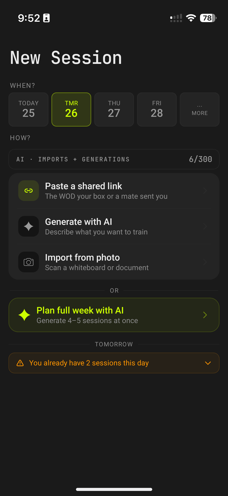
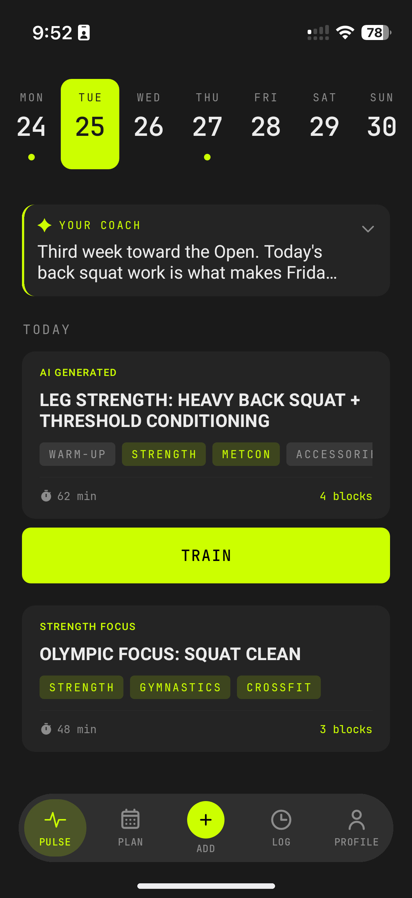
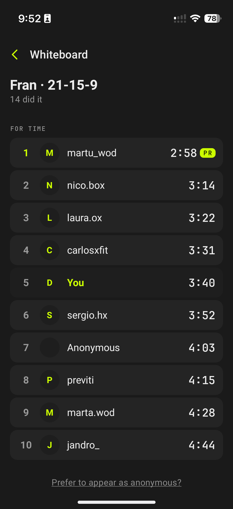

● Producto · Hecho en solitario · CrossFit y HYROX · En ambas stores
Aura: HYROX & WOD Timer
Una app de entrenamiento full-stack para atletas de CrossFit y HYROX — diseñada, construida y lanzada en solitario.
Aura convierte la foto de la pizarra de tu box en un entreno que puedes hacer y registrar en segundos, guarda cada PR y cada kilo, y te muestra quién más lo hizo. Soy dueño de todo el stack de punta a punta — lógica compartida, la UI en ambas plataformas, la IA, el backend, y hasta la monetización, el ASO y lo legal — publicada en Google Play y la App Store bajo mi propia empresa, Pampa.
- Arquitectura — Kotlin Multiplatform: MVI compartido, Koin DI, caché SQLDelight, cliente Ktor.
- UI — Compose Multiplatform: una sola UI para Android y iOS.
- Backend — Ktor + Exposed + PostgreSQL + Flyway, auth JWT.
- Visión IA — lee la foto de la pizarra del box y la convierte en un entreno estructurado y registrable.
- Coach IA — insights post-entreno y planificación semanal adaptativa.
- La Pizarra — capa social que muestra quién en tu box hizo el mismo WOD.


